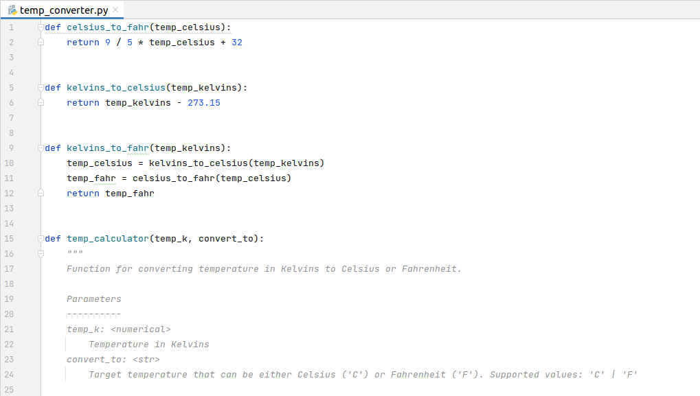
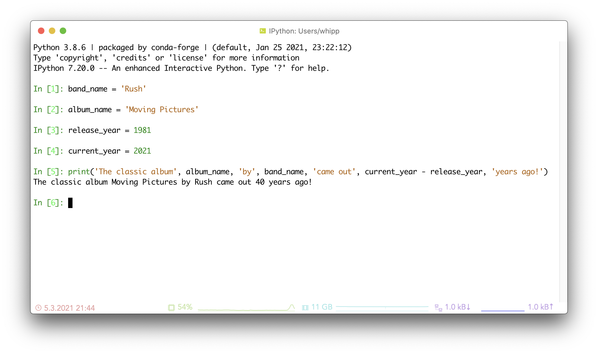
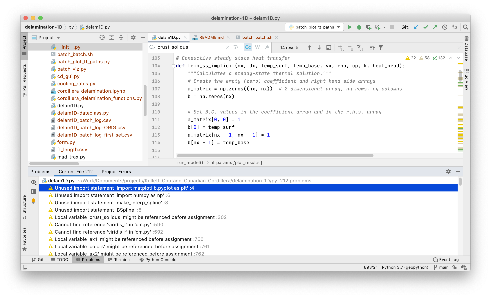

Writing and running Python code#
Python script files: the traditional way of writing code#
The traditional approach to writing programs comprises writing the actual program in source code files which are normally plain text files having the file extension .py (see Figure 1.8). To be able to run these script files, you need to execute them separately via a terminal, or call the functionalities from Python interpreter. Documenting the code is done either as text comments within the source code files or separately in a word processed document or a website. There is nothing inherently wrong with this approach (it’s the approach that e.g. software engineers use), however there are drawbacks. First, documentation in source code files relies on users being able to access and read the source code. This may be difficult for non-programmers. Second, documenting the functionality of software outside of the source code requires programmers to take an additional step to write documentation separately, and also to keep the documentation in sync with the code as its functionality changes. Among natural scientists, this often means that the documentation simply never gets written, or that it does not keep up with changes in the software, which may mean the documentation has little value. Clearly, a solution that would combine documentation of the code with the code itself would be quite helpful! Computational notebooks offer a solution to this problem through combining text, code, results, graphics and much more all in one file. In this book, we will be using Jupyter Notebooks - computational notebooks developed in the Project Jupyter [1].

Figure 1.8. An example of a Python script file.
Jupyter Notebooks: Code and documentation combined#
Jupyter Notebooks are an application that combines source code with rich-text documentation, equations, images, and plots in the form of a single interactive document (Figure 1.9). The Jupyter Notebooks (having a filename extension .ipynb) are divided into cells, where each cell contains part of the document intended for either source code or documentation. The most common cell types for use in Jupyter Notebooks are “Code” cells and “Markdown” cells (Figure 1.10). The code cells support several different programming languages, including Python. The Markdown cells are for creating nicely formatted text using the Markdown markup language [2]. To interact with the notebooks, they must be hosted on a server either locally or remotely, and accessed via a web browser.
Combining source code and documentation into a single document is an excellent solution to the problem of having these two exist separately in the traditional way of programming, however there are other benefits to Jupyter Notebooks as well. For example, data science workflows often use Jupyter Notebooks to provide complete descriptions of how the author loads, processes, and otherwise interacts with data files or other data sources in their data analysis. In this way, Jupyter Notebooks can be used to give step-by-step descriptions of a data processing workflow, including producing plots and other data visualizations that are saved within the notebook. By including references to scientific articles and sources in the notebook, you can basically have a self-contained, reproducible scientific document where anyone can easily see exactly how you have done your analysis (and redo it themselves if they like). In terms of open science, this is a huge benefit.

Figure 1.9. Features of a Jupyter Notebook.

Figure 1.10. An example Jupyter Notebook.
Other coding environments#
The Python interpreter#
One of the simplest options for coding in Python is to use the Python interpreter (Figure 1.11). The Python interpreter is an interface where Python code can be typed and executed when you press Enter. In this way it is similar to a “Code” cell in a Jupyter notebook. For very simple tasks and for testing short sections of Python programs, the Python interpreter can be the fastest and easiest option. The history of commands may be recorded when using the Python interpreter, however commands that have been entered in the interpreter are not saved to a file. Thus, you should use the Python interpreter only as a temporary coding environment that can be useful for quickly testing some code.

Figure 1.11. The IPython console, an enhanced Python interpreter.
Integrated development environments (IDEs)#
At the other end of the spectrum in terms of comprehensiveness and complexity (compared to Python interpreter) are integrated development environments, or IDEs as they are typically called. IDEs, such as the one in Figure 1.12, are software applications that typically include a source code editor, debugging tools, a file browser, software version control tools, and a linter that can be used to detect syntax errors in source code. The idea of an IDE is to assemble relevant software development tools into a single application that can help users to develop better software more quickly and with fewer errors. For new programmers, an IDE can be somewhat intimidating, but can also be helpful because many IDEs will indicate syntax errors and suggest fixes in the source code. These include some errors that may be difficult to identify from runtime errors that arise when the code is executed.

Figure 1.12. The PyCharm IDE.
There are several excellent IDEs for Python software development, including JupyterLab, PyCharm, Visual Studio Code, Spyder, and IDLE. We briefly describe some of the key attributes of each below.
JupyterLab is a browser-based IDE for working with Jupyter notebooks. It builds upon the earlier Jupyter notebook application by making the layout of the file browser, interactive notebook panel, Python interpreter, and system terminal flexible and viewable within the same window, like most IDEs. There is also a system for adding functionality to JupyterLab with useful plugins for version control and other IDE features. We recommend using JupyterLab with the Jupyter notebooks included with this textbook.
PyCharm is an advanced IDE designed specifically for use in Python programming (Figure 1.12). It is perhaps the most comprehensive option of all in the list here, offering excellent integrated tools for developing well-formatted, clean Python code. PyCharm also supports Jupyter notebooks and a free educational edition that includes all the tools available in the Professional edition.
Visual Studio Code is another IDE, but not one designed specifically for Python. Instead, Visual Studio Code (or VSCode) is a generic source code editor that can be expanded to function like an IDE through extensions, including those specific to Python and Jupyter notebooks. VSCode is highly customizable, and may appeal to those wanting to use the same IDE for programming in Python and other programming languages.
Spyder, the Scientific Python Development Environment, is yet another IDE designed specifically for programming in Python. This free and open-source IDE excels in scientific applications and offers a number of excellent tools that are useful in debugging programs. Specifically, Spyder’s variable explorer is a great way to check the values assigned to variables and arrays and ensure your programs are functioning correctly.
IDLE, Python’s Integrated Development and Learning Environment, is a lightweight IDE that is included with many Python distributions. It is not as feature rich as some of the other options listed above, but computers that have Python installed may also already have IDLE available. This can be handy when you’re working on a machine where you’re not able to install other software.